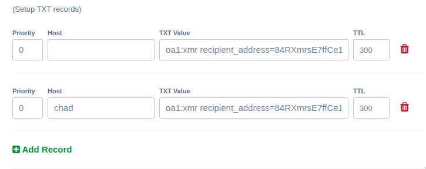
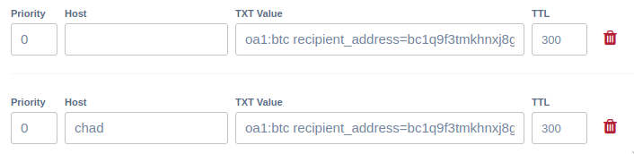

The Problem
Cryptocurrency can be unintuitive. After all, look at this annoying Monero address of ours:
84RXmrsE7ffCe1ADprxLMHRpmyhZuWYScDR4YghE8pFRFSyLtiZFYwD6EPijVzD3aZiEpg57MfHEr1pGJNPXyJgENMnWrSh
It breaks up pages and looks ugly. When you copy and paste it to send money, you might be paranoid that you somehow added an extra character in there. That's all around a bad user experience.
It would be nice...
It would be nice if we could just input someone's email address or maybe a website and send Bitcoin or Monero to that instead. So instead of that long jumble, it would be easier to just type in someone's website or email and sending them money that way.
The Solution
The OpenAlias standards are just that.
It uses DNS settings, which you know something about, to link a website or an email address with a cryptocurrency address.
It allows someone to simply put landchad.net or chad@landchad.net as a payment recipient and that will direct to that long address above.
The default Monero wallet and Bitcoin's Electrum are already compatible with OpenAlias, as are a growing group of wallet software.
Let's do it.
Open up your domain registar and open up your DNS settings for the website you would like to add.
Open the TXT record section. Now, create an entry with text like that below:
oa1:xmr recipient_address=84RXmrsE7ffCe1ADprxLMHRpmyhZuWYScDR4YghE8pFRFSyLtiZFYwD6EPijVzD3aZiEpg57MfHEr1pGJNPXyJgENMnWrSh; recipient_name=LandChad.net;Obviously change the address to your desired address and you may also give a proper name for yourself (this may be multiple words). Note that the entry above is all one line.
Now create a new TXT entry and input this text into the TXT Value input box. Note here that I have create two entries:

One entry's "Host" is left empty, this will allow people to send Monero by merely typing landchad.net.
The second entry has "chad" as the "Host"; this will allow people to send money to chad@landchad.net, i.e.
this is how you allow people to connect a Monero address with an email address.
Checking to see if it works...
Let's check to see if it works.
In the Monero wallet, we can now type in landchad.net as a recipient:

And once we press the "Resolve" button, it automatically turns into that address we gave to the DNS!

Now people can donate Monero to you without having to worry about QR codes or copying-and-pasting super-long public addresses!
Now with Bitcoin!
OpenAlias was originally developed for Monero, but since it's such a good idea, Bitcoin wallets have implemented it as well, so let's add some TXT entries for Bitcoin. The OpenAlias TXT records have the same format, except for the xmr at the beginning is replaced with btc and obviously we use a Bitcoin address instead of Monero.
oa1:btc recipient_address=bc1q9f3tmkhnxj8gduytdktlcw8yrnx3g028nzzsc5; recipient_name=LandChad.net;Add the TXT entries in and save:
And we can then check that it's working by trying to send money to landchad.net in Electrum.
See that it automatically appends the address!

And that's it. Now users can easily send your website or email address Bitcoin or Monero without having to worry about hard to read addresses and QR codes.